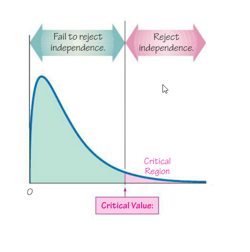
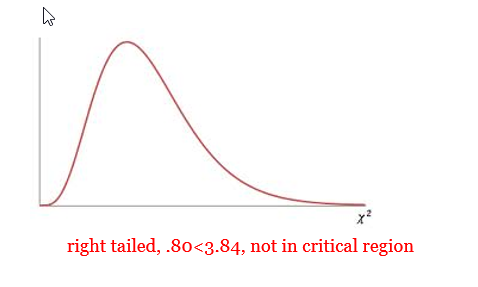
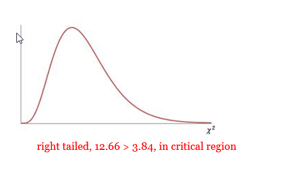
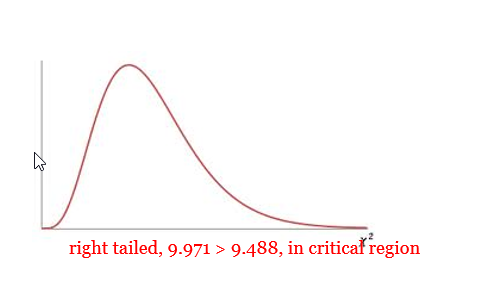

Unit 4 Hypothesis Testing
10.2 Test for Independence
A contingency table (or two way frequency table) is a table in which frequencies correspond to two variables. One variable is used to categorize rows and a second variable is used to categorize columns.
A test of independence tests the null hypothesis that in a contingency table, the row and column variables are independent.
Requirements:
- The sample data are randomly selected
- The sample data are represented as frequency counts in a two way table.
- For every cell in the contingency table, the expected frequency E is at least 5. (There is no requirement every observed frequency must be at least 5. Also there is no requirement that the population must have a normal distribution or any other specific distribution.
Degrees of Freedom:
\(df = (columns - 1)(rows - 1)\)
Null and Alternate hypotheses:
\(H_0\): The row and column variables are independent (Means: No relationship between the variables)
\(H_A\): The row and column variables are dependent (Means: Some relationship between the variables)
Test statistic for a Test of Independence:
You will get the test statistic from technology. You must label the rows in the first column. Use this formula if you want to calculate the test statistic by hand. The last pages of these notes have a more detailed explanation of calculating the expected frequencies, critical value, and test statistic by hand.
\(\chi^{2}=\sum \frac{(O-E)^{2}}{E}\)
Using Technology for a Test for Independence:
- Null, \(H_0\)
- The distribution of ___________ is the same as the expected distribution.
- For each category, the observed value is equal to the expected value.
- Mathematically:
- \(p_{1}=p_{2}=p_{3} \dots\) for an expected uniform distribution
- \(p_1=\_\_\_\_\_\_\_,\;p_2=\_\_\_\_\_\_\_,\;p_3=\_\_\_\_\_\_\_...\) for any non-uniform expected distribution.
- Alternative, \(H_A\)
- The distribution of _____________ differs from the expected distribution.
- In the categories, at least one observed value is NOT equal to the expected value.
Using Technology for a Goodness of Fit Test:
- Identify the critical chi-squared value, \({\chi^2}_{CV}\) (called \({\chi^2}_{O}\) in your text) in order to shade your curve.
- \(df = (columns - 1)(rows - 1)\)
- Area to the right (always a right-tail test, use ≥) is the significance level
- Run the test and record the important information: Identify
- Test Statistic (Chi-Square)
- P-value
- Mark your curve with your test statistic. Is it in the shaded rejection region in the right tail?
- Make your decision about the null. Was the p-value < alpha?
The Chi-Square Curve for a Test for Independence
A test of independence is always a right-tailed test. Large values of χ^(2 )result from significant differences in observed and expected frequencies. So, when the test statistic falls in the critical region in the right tail, we know that our observed frequencies are too different from what the expected values should be—therefore, we know the row and column variables are not independent. (Expected values assume independence.) Large values of χ^(2 )result from a dependence between the two variables. When the test statistic falls in the critical region in the right tail, we know that the two variables have some level of dependence.

Problems
- Open Roof or Closed Roof? In a recent Six Nations Grand Slam game, the Wales rugby team broke protocol by asking to have the roof closed on the Principality Stadium (Millenium Stadium) in Cardiff. However, under Six Nations rules, both teams must agree to the roof being closed and Ireland requested it stay open. But would the closed roof really help the Wales team? The table below shows the results from rugby games leading up to the Grand Slam. Use a 0.05 significance level to test for independence between wins and whether the roof is open or closed. Does it appear that a closed roof really gives the Wales team an advantage?
Win Loss Closed Roof 36 17 Open Roof 15 11 - The original claim:
The number of Wales wins is dependent on the roof being open or closed. - \(H_0\) :
The number of Wales wins is independent of the roof being open or closed. - \(H_A\) :
The number of Wales wins is dependent on the roof being open or closed. - \(\alpha\)
= 0.05 - \({\chi^2}_{CV}\):
= 3.84 - \({\chi^2}_{TS}\):
= 0.80 - p-value:
0.3716 - Rejection Criteria: Reject \(H_0\) if
p-value < 0.05 - Decision:
Fail to reject \(H_0\) - Concluding Statement:
There is not sufficient evidence to support the claim that the number of wins and the roof being open or closed are dependent. - Does it appear that a closed roof really gives the Astros an advantage?
No, the evidence does not support the claim that there is a relationship between number of wins and the status of the roof. One variable does not appear to change according to the other variable.

- The original claim:
- Alcoholism Risk in 9/11 Responders. Some firefighters and other responders to the World Trade Center on September 11, 2001, have experienced symptoms of traumatic stress, depression, anxiety, and drinking problems. Cornell University researchers conducted a survey of a random sample of New York firefighters, some of whom had participated in the 9/11 rescue efforts. The reports title is “On the Front Line: The Work of First Responders in a Post-9/11 World.” Use the data from the report to investigate the question: Are alcohol-related problems among New York firefighters associated with participation in the 9/11 rescue? (lumenlearning.com)
Participated in 9/11 rescue 793 309 Did not participate in 9/11 rescue 441 110 - The original claim:
Participation in 9/11 rescue operations and alcohol related problems for New York firefighters are dependent. - \(H_0\) :
Participation in 9/11 rescue operations and alcohol related problems for New York firefighters are independent. - \(H_A\) :
Participation in 9/11 rescue operations and alcohol related problems for New York firefighters are dependent. - \(\alpha\)
= 0.05 - \(df = 1\)
- \({\chi^2}_{CV}\):
= 3.84 - \({\chi^2}_{TS}\):
= 12.66 - p-value:
0.0004 - Rejection Criteria: Reject \(H_0\) if
p-value < 0.05 - Decision:
Reject \(H_0\) - Concluding Statement:
There is sufficient evidence to support the claim that participation in 9/11 rescue operations and alcohol related problems for New York firefighters are dependent.
 3.84, in the critical region">
- The original claim:
- Injuries and Motorcycle Helmet Color : A case-control (or retrospective) study was conducted to investigate a relationship between the colors of helmets worn by motorcycle drivers and whether they are injured or killed in a crash (Wells). Use a 0.05 significance level to test the claim that injuries are independent of helmet color. Should motorcycle drivers choose helmets with a particular color? If so, which color appears best?
Black White Yellow/
OrangeRed Blue Controls (not injured) 491 377 31 170 70 Cases (injured or killed) 213 112 8 55 26
- The original claim:
Motorcycle injuries are independent of helmet colors. - \(H_0\) :
Motorcycle injuries are independent of helmet colors. - \(H_A\) :
Motorcycle injuries and helmet colors are dependent. - \(\alpha\)
= 0.05 - \(df = 4\)
- \({\chi^2}_{CV}\):
= 9.488 - \({\chi^2}_{TS}\):
= 9.5114 - p-value:
0.0495 - Rejection Criteria: Reject \(H_0\) if
p-value < 0.05 - Decision:
Reject \(H_0\) - Concluding Statement:
There is sufficient evidence to reject the claim that motorcycle injuries and helmet color are independent.
 9.488, in the critical region">
Should motorcycle drivers choose helmets with a particular color? If so, which color appears best?
It does appear that motorcycle drivers should select helmets that are yellow/orange.
***Note: If you perform this test with α = 0.01, you would fail to reject independence.
- The original claim:
Calculating the Expected Frequencies, Critical Value, and Test Statistic by Hand
The chi-square test provides a method for testing the association between the row and column variables in a two-way table. The null hypothesis H0 assumes that there is no association between the variables (in other words, one variable does not vary according to the other variable), while the alternative hypothesis Ha claims that some association does exist. The alternative hypothesis does not specify the type of association, so close attention to the data is required to interpret the information provided by the test.
The chi-square test is based on a test statistic that measures the divergence of the observed data from the values that would be expected under the null hypothesis of no association. This requires calculation of the expected values based on the data. The expected value for each cell in a two-way table is equal to (row total*column total)/n, where n is the total number of observations included in the table. (http://www.stat.yale.edu/Courses/1997-98/101/chisq.htm)
Notation:
- O represents the observed frequency of an outcome in a cell of a contingency table
- E represents the expected frequency in a cell, found by assuming that the row and column variables are independent
\(E=\frac{(\text { row total })(\text { column total })}{(\text { grand total })}\)
- r represents the number of rows in a contingency table (not counting labels)
- c represents the number of columns in a contingency table (not counting labels)
(see p. 549-550 for rationale behind expected frequencies—they are based on multiplying the probability of being counted in a certain cell by the size of the sample)
Critical Value:
The critical value for \(\chi^2\) can be found in Table A-4 using the degrees of freedom and significance level (remember that the test for independence is right-tailed, so α represents the area to the right of the critical value).
Degrees of freedom
\(df== (r-1)(c-1)\)Test statistic for a Test of Independence:
\(\chi^{2}=\sum \frac{(O-E)^{2}}{E}\)
E must be calculated for EACH cell in the contingency table.
The TS is calculated by adding all of the \(\frac{\left(O-E\right)^2}E\) from each cell.
Problems
- Popular Kids: Students in grades 4, 5, and 6 were asked whether good grades, popularity, or athletic ability were most important to them. Use the following data to test whether the responses depend on the grade level of the student. Use a 0.05 significance level.
Grade Goals 4 5 6 Total Grades 49 50 69 168 Popular 24 36 38 98 Sports 19 22 28 69 Total 92 108 135 335
(Data source: Chase, M.A and Dummer, G.M. (1992), "The Role of Sports as a Social Determinant for Children," Research Quarterly for Exercise and Sport, 63, 418-424.)\(H_0\): Grade level and the most important factor to the students are independent.
\(H_A\): Grade level and the most important factor to the students are dependent.
- Expected Values: The expected value for each cell in a two-way table is equal to (row total*column total)/n, so we have:
\(E\left(4^{\mathrm{th}}, \text { grades }\right)=168 * 92 / 335=46.1\)
\(E\left(5^{\text { th }}, \text { grades }\right)=168 * 108 / 335=54.2\)
And so on…
EXPECTED: Grade Goals 4 5 6 Grades 46.1 54.2 67.7 Popular 26.9 31.6 39.5 Sports 18.9 22.2 27.8 - Critical Value:
Degrees of freedom = (3-1)(3-1) = 4
\(\alpha = 0.05\)
\({\chi^2}_{CV}=9.488\)
- Test Statistic:
The chi-square statistic for the above example is computed as follows:
\(\chi^{2}=(49-46.1)^{2 / 46.1}+(50-54.2)^{2 / 54.2}+(69-67.7)^{2 / 67.7}+\ldots .+(28-27.8)^{2 / 27.8}\)
\(=0.18+0.33+0.03+...+0.01\)
\(=1.51\)
- Conclusion:
The TS (1.51) is not in the critical region to the right of CV (9.488), so we would fail to reject the null hypothesis of independence. This indicates that there is no relationship between grade level and the most important factor to the students.
- Expected Values: The expected value for each cell in a two-way table is equal to (row total*column total)/n, so we have: